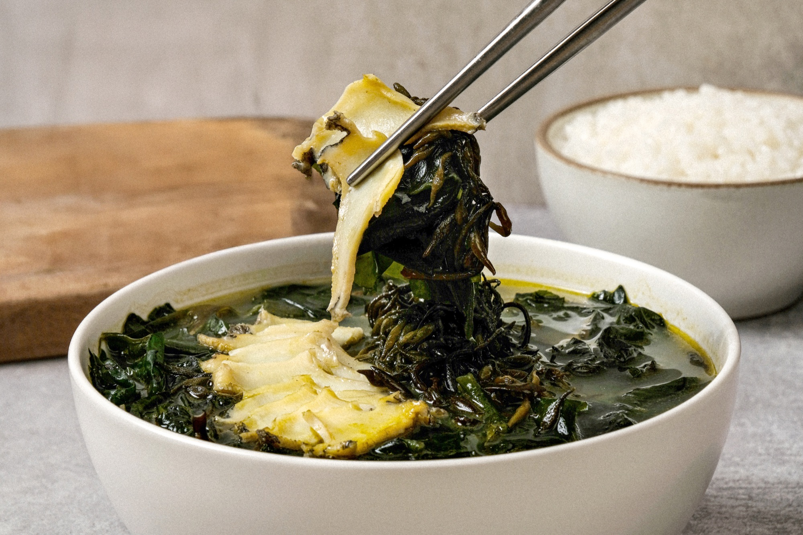
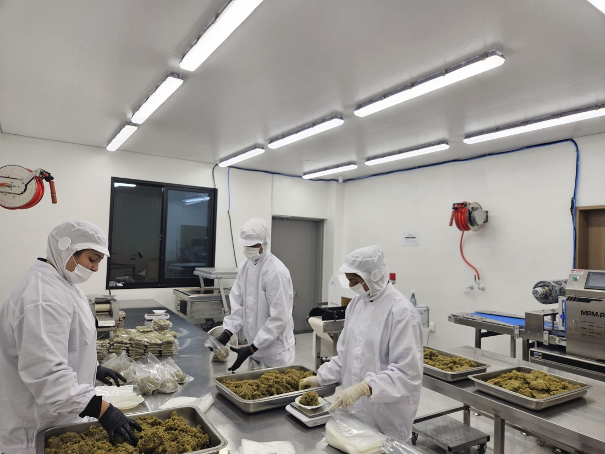

전복죽
전복을 넣어 끓인 부드러운 쌀죽입니다.


회사 소개
용가네는 기적수산의 수산식품 브랜드입니다. 직접 기른 전복과 미역을 진도의 가공시설에서 제품으로 만들어 국내외에 공급합니다.
제품 소개
전복을 넣어 끓인 부드러운 쌀죽입니다.

전복과 미역을 함께 끓인 한국식 국입니다.

장어를 넣고 끓인 진한 국물 요리입니다.
품질과 수출

거래 문의
도매 공급, 제품 규격, 수출 및 유통 관련 문의를 받습니다.